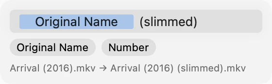

SubTrack verändert nie eine Quelldatei – es schreibt daneben eine neue. Das Namensformat legt fest, wie diese neue Datei heißt.
Um es zu ändern, blende den Inspektor ein (⌥⌘I), wähle Regeln und bearbeite Ausgabename. Jede Warteschlange hat ihr eigenes Format.

Das Format ist gewöhnlicher Text mit Platzhaltern, die für die Angaben der jeweiligen Datei stehen:
{name} – der Name der Quelldatei ohne Dateiendung.{n} – die Position der Datei in der Warteschlange.So wird aus The Third Man.mkv mit {name} (slimmed) die Datei
The Third Man (slimmed).mkv.
Die Dateiendung ist nie Teil des Formats. Die Ausgabe behält denselben Container wie die Quelle, sodass SubTrack die Endung selbst ergänzt; ein Format, das sie ändern wollte, würde etwas beschreiben, das nicht möglich ist.
Verdopple eine Klammer, damit sie wörtlich gemeint ist: {{name}} ergibt den Text
{name} statt des Dateinamens. Ein unbekannter Platzhalter wie {title}
bleibt unverändert und erscheint so im Namen; ein Tippfehler ergibt also einen seltsamen
Dateinamen, aber es geht nichts verloren.
SubTrack startet keine Warteschlange, deren Namen eine Datei zerstören würden, und das kann auf genau zwei Arten passieren – beide lassen sich schnell beheben. Siehe Einen Namenskonflikt beheben.